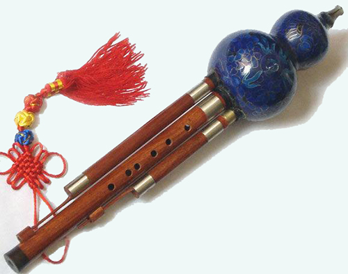

中国的传统吹奏乐器
我国吹奏乐器的发音体大多为竹制或木制。
根据其起振方法不同，可分为三类：
1、以气流吹入吹口激起管柱振动的有箫、笛(曲笛和梆笛)、口笛等。
2、气流通过哨片吹入使管柱振动的有唢呐、海笛、管子、双管和喉管等。
3、气流通过簧片引起管柱振动的有笙、抱笙、排笙、巴乌等。
由于发音原理不同，所以乐器的种类和音色极为丰富多彩，个性极强。并且由于各种乐器的演奏技巧不同以及地区、民族、时代和演奏者的不同，使民族器乐中的吹奏乐器在长期发展过程中形成极其丰富的演奏技巧，具有独特的演奏风格与流派。
典型乐器：笙、芦笙、排笙、葫芦丝、笛、管子、巴乌、埙、唢呐、箫
|  |
©2017 - 柴臻豪 胡苏兴 回首页 |